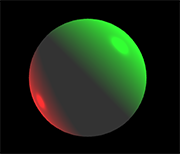

Lighting and Viewing the Scene¶
By default, when your program creates a 3D object, VPython creates a canvas named scene which contains a camera, two distant lights, and ambient lighting. You can manipulate the camera, and add or remove lights, including both distant lights and local lights. You can also adjust the ambient light in the scene.